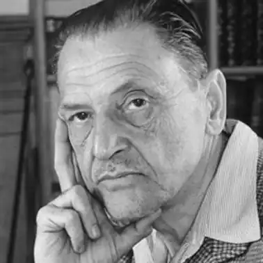
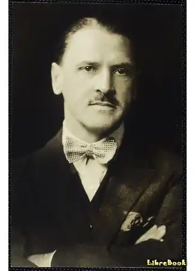
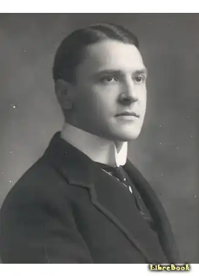
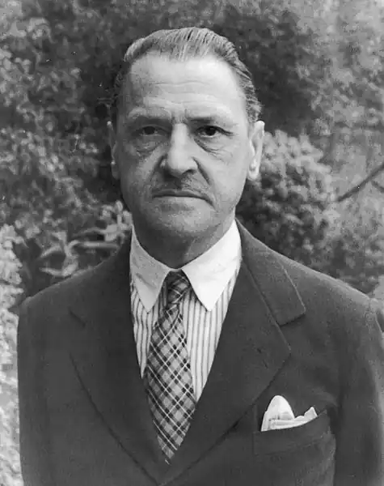

МОЕМ, Вільям Сомерсет (Maugham, William Somerset — 25.01.1874, Париж — 16.12. 1965, Кап-Ферре, південь Франції) — англійський письменник.Виступав як драматург, романіст, новеліст і критик. Сам Моем називав себе одним із провідних письменників другого розряду. Моем досягнув значної популярності та визнання за притаманну йому майстерність оповідача, правдивість, відточеність літературної форми, заснованої на принципі простоти, дохідливості та милозвучності.
Моем народився у сім'ї юриста британського посольства у Парижі. Говорити французькою почав раніше, ніж опанував англійську. Він був набагато молодшим за своїх трьох братів і, коли тих відіслали навчатися в Англію, залишався єдиною дитиною в домі батьків, майже ніколи не розлучаючись із матір'ю, до котрої був страшенно прив'язаний. У вісім років він осиротів: від туберкульозу померла мати. З її втратою пов'язані найсильніші переживання у житті Моема. Саме в цей час він почав затинатися. Через два роки раптово помер батько. Це трапилося саме в той час, коли в передмісті Парижа був добудований дім, у якому мала замешкувати вся родина. Але родини більше не було. Старші брати навчалися в Кембриджі, готуючись стати юристами, а Віллі відіслали в Англію під опіку дядька — священика Генрі Моема.
У понурому та холодному пасторському домі проминули його шкільні роки. Він зростав самотньо та замкнуто. У школі відчував себе аутсайдером, відрізняючись від хлопчаків, котрі виросли в Англії. Вони сміялися із заїки, з того, як він говорив англійською. Болісна сором'язливість дошкуляла Моему, а подолати її він був не в змозі. Близьких друзів не виявилося. "Я ніколи не забуду страждань цих років", — говорив Моем, уникаючи згадувати своє дитинство. Назавжди залишився осад гіркоти, постійної настороженості, побоювання бути приниженим. Виробилася звичка спостерігати за всім із певної дистанції. Книги і пристрасть до читання допомогли Моему сховатися від навкілля. Віллі жив у світі книг, серед яких улюбленими стали казки "Тисячі й однієї ночі", "Аліса в країні чудес" Л. Керролла, "Уеверлі" В.Скотта і пригодницькі романи капітана Маррієта. Моем добре малював, любив музику, належав до кращих учнів і міг претендувати на місце в Кембриджі, але глибокої зацікавленості щодо цього не відчував. Світлі спогади зосталися лише про одного вчителя — Томаса Філда, котрого під іменем Тома Перкінса Моем описав у романі "Тягар людських пристрастей". Але й радість від спілкування з Філдом не могла переважити те жорстоке й темне, що довелося спізнати Моему у класних і спальних кімнатах школи-інтернату для хлопчиків. У п'ятнадцять років Моем зрозумів, що дитинство закінчилося. Біль і рани зосталися на все життя, але зміцнилася сила опірності, внутрішньої незалежності, що й допомогло домогтися згоди дядька відіслати його до Німеччини вивчати німецьку мову. Моем поїхав у Гейдельберг, де вперше відчув себе вільним, займався тим, до чого лежало серце. Його захопила філософія, він слухав лекції К. Фішера про А. Шопенгауера, студіював праці Б. Спінози. Відкрив для себе Г. Ібсена й Г. Зудермана, пройнявся особливою атмосферою життя театру. Незабутнє враження на М. справила музика Р. Ватера. а читання гетевого "Фауста" відкрило для нього новий світ. У цей час він прочитав романи Дж. Мередіта, поезії А. Ч. Свінберна, П. Б. Шеллі, П. Верлена, "Божественну комедію" Данте. Розмірковуючи над "Життям Ісуса" Ренана, М. вперше відзвітував собі у тому, що назавжди втратив віру та став агностиком. Як стверджував згодом близький до Моема Алан Сірл, Моем хотів, але не міг вірити; душа його прагла віри, розум заперечував її. Моем повернувся в Англію, коли йому було вісімнадцять. Життя в Гейдельберзі сприяло його інтелектуальному пробудженню. Тепер треба було обрати фах. Дядько хотів бачити його священиком і схиляв до вивчення богослов'я, але Моем зробив свій вибір самостійно: він поїхав у Лондон і 1892 р. став студентом медичної школи при лікарні св. Томаса. Роки, проведені в лікарні та бідних кварталах одного із районів Лондона — Ламбеті, де він лікував своїх пацієнтів, зробили з М. не лише дипломованого лікаря, але й письменника. Усі ці роки він напружено працював. Лікарська практика чимало дала Моему як письменникові. Він побачив життя в неприкрашеному вигляді, навчився розуміти людей. "За ці три роки,— писав Моем у автобіографічній книзі "Підбиваючи підсумки" ("The Summing Up", 1938),— я був свідком усіх емоцій, на які здатна людина. Це розпалювало мій інстинкт драматурга, хвилювало в мені письменника... Я бачив, як люди вмирали. Бачив, як виглядає надія, страх, полегшення; бачив чорні тіні, які накладає на обличчя відчай; бачив мужність і стійкість". Заняття медициною позначилися на особливостях творчої манери Моема. Як і в інших письменників-лікарів (Сінклер Льюїс, Джон О'Хара), його проза неметафорична, позбавлена афектації та перебільшень. Засоби для прожиття були, але не було близьких друзів, нікого, хто міг би спрямувати у літературній роботі, якій Моем присвячував тепер увесь свій вільний час. Жорсткий режим — з дев'ятої до шостої лікарня — залишав вільними лише вечори. Він проводив їх, поглинаючи книги, і вчився писати. Переклав "Привиди" Г. Ібсена, прагнучи вивчити техніку драматурга, сам писав п'єси й оповідання. Рукописи двох оповідань Моема надіслав видавцеві Фішеру Анвіну. Одне з них отримало прихильний відгук Е. Гарнета — відомого авторитета в літературних колах. Гарнет порадив невідомому авторові продовжувати писати, а видавець відповів Моему "Потрібні не оповідання, а роман". Прочитавши відповідь Анвіна, Моем зараз же взявся за створення "Лізи з Ламбета". У вересні 1897 р. цей роман був опублікований. З цього часу Моем став професійним письменником. Моем писав у різних жанрах: виступав як драматург — "Леді Фредерік" ("Lady Frederick", 1907), "Невідомість" ("The Unknown", 1920), "Адуг" ("Тгіе Circle", 1921), "За бойові заслуги" ("For Services Rendered", 1932), "Шеляг" ("Sheppey", 1933) та ін.; романіст — "Ліза з Ламбета" ("Liza of Lambeth", 1897), "Місіс Креддок" ("Mrs Craddok", 1900), "Тягар людських пристрастей" ("Of Human Bondage", 1915), "Місяць і шеляг" ("The Moon and Sixpence", 1919), "Барвисте покривало" ("The Painted Veil", 1925), "Пряники та пиво" ("Cakes and Ale", 1930), "Театр" ("The Theatre", 1937), "На лезі бритви" ("The Razor's Edge", 1945) та ін.; новеліст — збірки "Трепет листка" ("The Trembling of a Leaf" , 1921), "Від першої особи" ("First Person Singular", 1931), "Забавки долі" ("Creatures of Circumstances", 1947) та ін. Моем є автором багатьох статей про письменницьке ремесло, про мистецтво оповідача, про романістів (Г. Філдінг, Дж. Остен, Діккенс, Ґ. Флобер, Ф. Достоєвський). М. жваво відгукувався на запити часу та смаки публіки. Його шлях до успіху не був легким; він працював регулярно, вперто і цілеспрямовано, зумів добитися визнання та матеріального добробуту, ставши одним із найчитаніших авторів. Наклади його книг розкуповувалися з дивовижною швидкістю та приносили великі прибутки. Моем завжди підкреслював, що сфера його інтересів як читача була пов'язана з характерами та долями людей, зовні, здавалося б, нічим особливо не примітних. Він не тяжів до виняткового, вважаючи, що найцікавіше і несподіване міститься у повсякденному. З болю та страждань, з якими життя зіштовхнуло його у Лам-беті, народився перший роман, написаний у традиціях натуралізму, де йдеться про долю молодої жінки, котра стала жертвою середовища. "У "Лізі з Ламбета", — писав Моем у книзі "Підбиваючи підсумки", — я, нічого не додаючи та не перебільшуючи, зобразив людей, котрі зустрічалися мені в районі, який я обслуговував як практикант-акушер, і випадки, що вразили мене, коли зі службового обов'язку я заходив у будинки чи у вільний час тинявся вулицями... За нестачею уяви я просто вносив у книги те, що бачив власними очима та чув своїми вухами". Принципу достовірного опису буденного Моем залишився вірний і надалі. Якщо в "Лізі з Ламбета" відчувається вплив Е. Золя, то роман "Місіс Креддок" написаний у традиціях мопассанівської прози. Тут уперше в Моема прозвучало питання про те, що таке життя та кохання. Очевидна близькість "Місіс Креддок" до роману Ґ. де Мопассана "Життя". Моем високо цінував Мопассана. "Він гранично ясний і виразний, прекрасно відчуває форму і вміє витиснути зі своїх сюжетів максимум драматизму", — писав Моем. До того ж прагнув і сам Моем. Сенсаційний успіх мали п'єси Моема, вони ж забезпечили йому матеріальний достаток. День прем'єри "Леді Фредерік" — 26 жовтня 1907 р. — став знаменним у житті М.: він був визнаний як драматург. Моем продовжує традиції театру Реставрації та комедій О. Вайлда, зображує звичаї, безглуздя та вади світського товариства. У чудових діалогах розкриваються лицемірство та святенництво персонажів. П'єси М. поділяються на комерційні та серйозні. У перших він переслідує суто розважальну мету, протиставляючи їх "драмі ідей" Дж. Б. Шоу. У серйозних п'єсах звертається до важливих соціальних проблем. У п'єсах "Невідомість", "За бойові заслуги", "Шеппі" сильний критичний первень, показано наслідки Першої світової війни, що поламала долі багатьох людей. Моем був учасником Першої та Другої світових воєн, виступав проти кайзерівської, а потім і фашистської Німеччини в якості агента британської розвідки. Водночас він вважав політику минущою, а тому несуттєвою для художнього твору, довговічність якого визначається красою. Однак Моем не оминав своєю увагою сьогочасні проблеми війни і миру, колоніальної політики, потрактовуючи їх у руслі гуманізму ("За бойові заслуги", "На лезі бритви", "Дощ", "Макінтош" та ін.). Коли почалася Перша світова війна, Моем завербувався в автосанітарну частину і потрапив у Францію. Потім працював у розвідці, перебуваючи рік у Швейцарії, аз 1917 р. був направлений із секретною місією в Петроград з метою перешкодити приходу більшовиків до влади. У кінці війни Моем лікувався у туберкульозному санаторії у Шотландії. Вийшовши звідти, цілком віддався літературній діяльності та подорожам. Його вабили далекі країни, екзотичні куточки світу, "околиці імперії". Він плавав різними морями на пароплавах-люкс та на грузових суденцях, на вітрильних шхунах і рибальських човнах; пересувався на потягах, автомобілях, верхи на конях, ходив пішки.